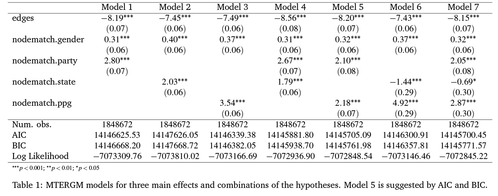
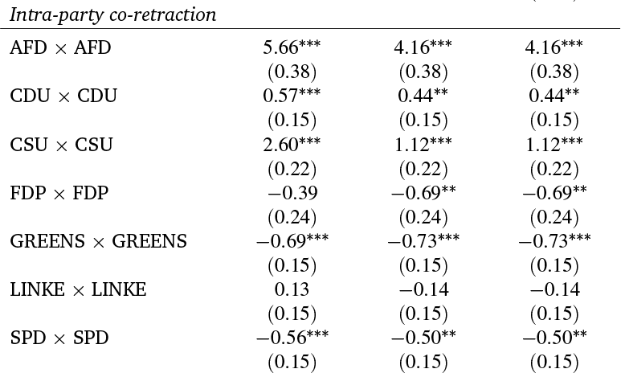
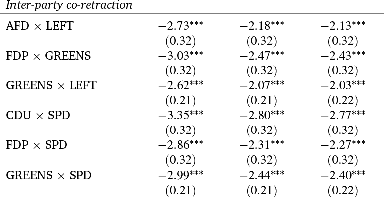

What can we learn from deleted tweets?
Predicting tweet deletion among German state MPs
Jan Bucher, PhD fellow, University Heidelberg & Lecturer, Aalen University.
janbucher@gmail.com
Like, share, retract, repeat?
Reliability of support signals in social media
Jan Bucher, PhD fellow, University Heidelberg & Lecturer, Aalen University.
janbucher@gmail.com
Goals
- Reliability assessment for deleted social media signals
- Understand what is structuring social media signals of MPs
Reliability
- Psychometric reliability assessment..
- .. makes assumptions hard to meet for social media data ..
- .. while deleted retweets mitigate some of it ..
- .. data set size, sparsity and missing values are a big problem.
- BUT: quantitative confimatory network analysis estimates goodness of fit.
Theory
- Competing principals theory (Carey 2007) in social media signaling
- CPT accepted in parliamentary research
- Theoretical framework for parliamentary co-sponsorship networks (Bucher 2025, I hope)
H1 (Party level deletion)
MPs are more likely to retract retweets in accordance to other members of their party.
(National party as delegator)
H2 (State level deletions)
MPs are more likely to retract retweets in accordance to members of their parliaments.
(State parliament as delegator)
H3 (PPG level deletion)
MPs are more likely to retract retweets in accordance to members of their parliamentary party group.
(PPG as delegator and monitoring body)
Data and definition
- Deleted retweets for a pair of MPs = co-retracted retweets
Confirmatory analysis

Exploratory analysis (I)

Exploratory analysis (II)

Reliability results
- No random dyadic soup, but reularties in plot
- Network predicted by two systemic variables
- Accepted goodness of fit estimation
- Deleted retweets are reliable data source
Inference results
- Party and PPG as significant predictor for co-retraction
- Mixed findings for state as competing principal
- In line with theoretical expectations
Exploratory results
- Homogeneous significant negative effects for inter-party co-retraction
- Co-retraction prevalent in right wing parties
- Mixed findings for intra-party co-retraction